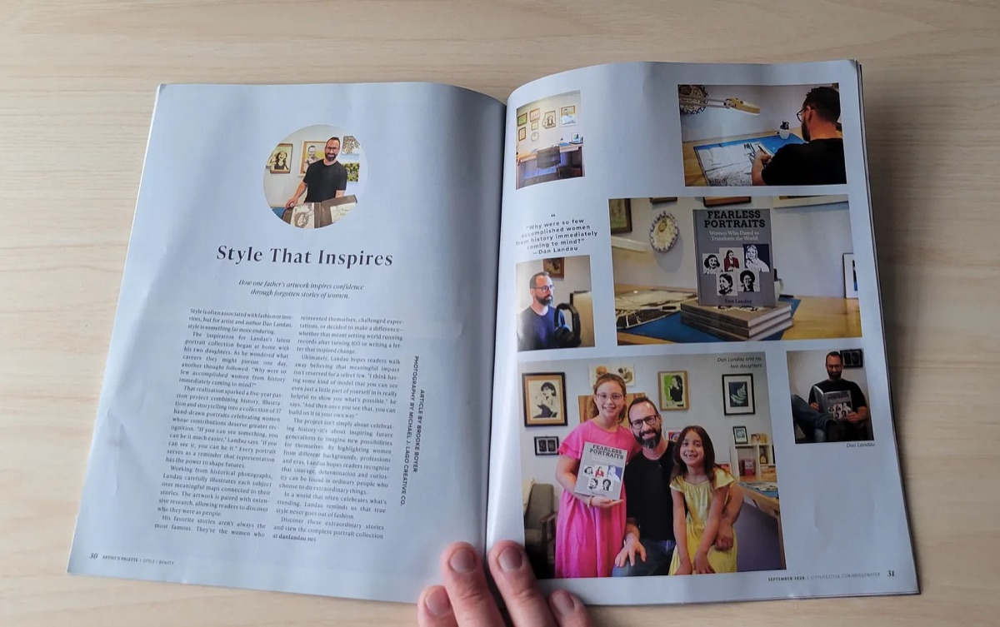
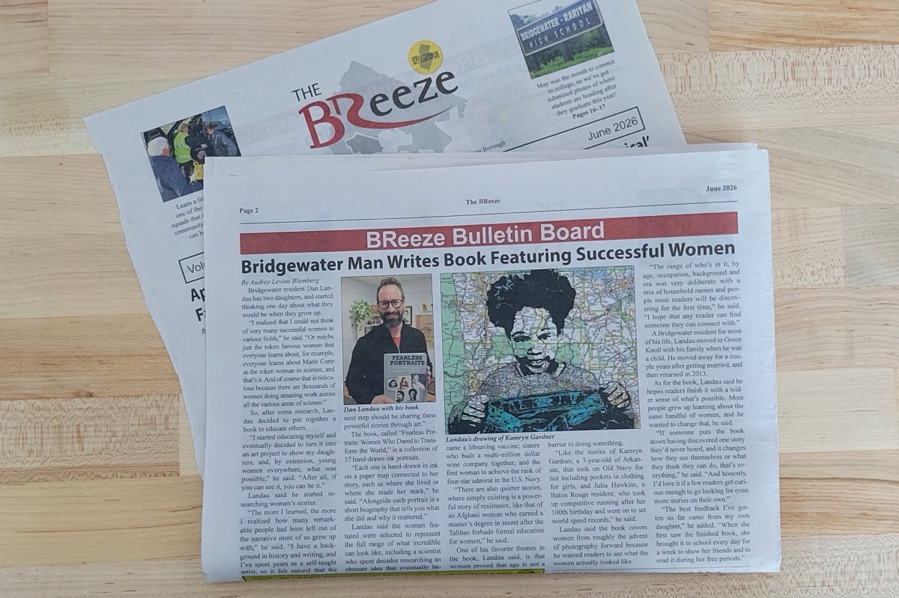

History has always belonged to those brave enough to rewrite it.
Fearless Portraits features hand-drawn ink portraits paired with biographical narratives about women who defied expectations, challenged authority, and changed the world in some large or small way. Revolutionaries, business leaders, scientists, artists and activists. Some names you know. Others were buried by history, their contributions obscured or stolen. All faced obstacles designed to silence them—and persisted anyway.
A few of the 37 different portraits inside the book.
Press coverage and reader reviews of Fearless Portraits.

Read the article“The project isn’t simply about celebrating history—it’s about inspiring future generations to imagine new possibilities for themselves.”
Brooke BoyerBridgewater City Lifestyle

Read the article“The women featured were selected to represent the full range of what incredible can look like.”
Audrey Levine BlumbergTAPinto Bridgewater-Raritan
“A fun gift for the feminist who has everything.”
Lauren A.Reader
See the book on Amazon“Amazing detail of the most amazing trailblazers! Terrific for encouraging young women and girls to develop aspirational identities!”
Todd AlexanderAmazon review
Ready to meet these thirty-seven remarkable women? Available now in hardcover and on Amazon in paperback.
Questions about the book? Want to share your thoughts? Drop me a line.